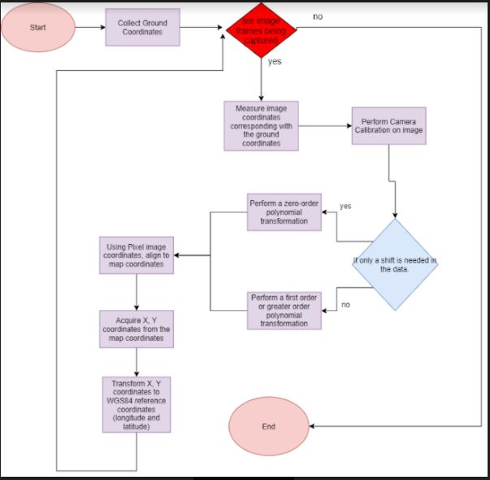
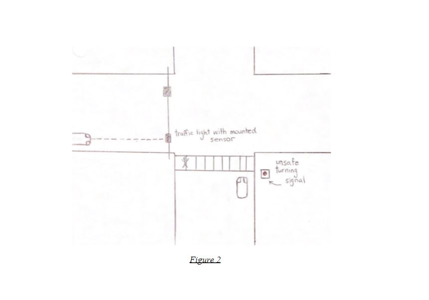
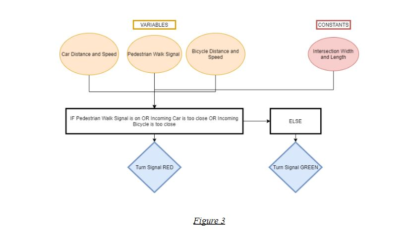
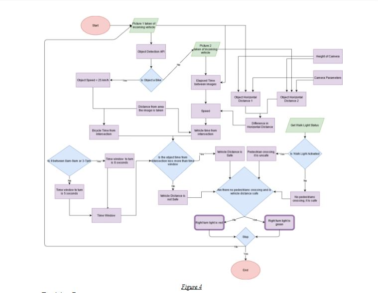
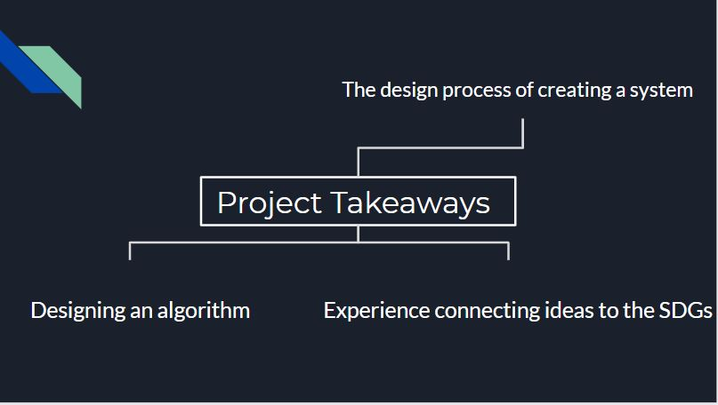

About VisionZero
The purpose of this project is to create a system that will reduce the odds of an accident in a busy intersection, this system aims to sustain the United Nations Sustainable Development Goals #9 and #11 : Industry, Innovation and Infrastructure and Sustainable Cities and Communities.
The goal of this system is to reduce the number of accidents that occur in this intersection, our group came to the conclusion that the majority of accidents result from drivers surpassing the speed limit. Although, there are already many systems for this issue, so we thought of a different angle to look at this problem, from the point of view from the driver on the other side of the accident.
There is a high factor of risk when making right turns during a red light, due to the driver needing to check multiple movements around them in a short amount of time, such as crossing pedestrians and fast-approaching vehicles from behind. Failure to accurately account for any of these might result in hitting a pedestrian or getting hit from behind by a fast-moving vehicle. The driver’s attention is too spread too thin which causes these accidents so the need for an easier way to identify safer turn timings arose.
How It Works
This system is operated by using image based measurements, applying photogrammetry concepts, as well as using existing traffic infrastructure. A sensor on the traffic light will constantly take images of the incoming traffic, points on these images will be transformed into WGS84 coordinates which would allow the system to determine the incoming distance and speed of vehicles or bicycles. The algorithm used to perform the image point to ground point transformation is outlined in the Figure below.

The system will then determine if there is enough time for a car turning right to make a turn taking into account the intersection width, incoming object speed and object distance. The system will also detect if there’s a pedestrian walk button that has been pressed, for pedestrian movement parallel to moving traffic, if there’s pedestrians crossing, the turn will also be deemed unsafe . If one of the instances is said to be unsafe, the light by the turning lane will be red, indicating to stop, if not then the light will be green. A diagram of the system is shown in Figure 2.

The beta version of our algorithm is displayed in Figure 3, this is a low-level description that gave a basic idea of how the algorithm to run this system would work.

After some improvements, the high-level algorithm was built, shown in Figure 4. As seen in the algorithm, the basic components such as if statements and inputs were built upon to give a more in depth description for a better functioning system.

Decision Process
For data selection, we chose traffic cameras at intersections as these already exist in some cities and their intersections so implementing the solution involves adding to currently existing infrastructure meaning a less costly solution.
The consideration of the walk sign status was used to indicate whether pedestrians are likely to be crossing at the time to avoid hitting them when making a right-turn. The use of camera footage as input allowed for the use of object detection algorithms like YOLO which detect in each frame of the video if a vehicle is approaching the intersection and what type e.g. bike or automobile. We made the assumption in the calculation for the Bicycle Time from Intersection variable (Figure 4) that bike’s were going at their average speed of 25km/h.
Constraints
The constraints we chose to consider in our design were:
1. Use at least one camera in our system design
2. Use existing Traffic Infrastructure (such as traffic camera)
3. Traffic information eg., speed limit
4. Vehicular Ad-hoc Network (VANET)
The reason why we choose these constraints is because we planned on creating a new traffic light that senses if a car is approaching the intersection and more specifically making a right turn during a red light. Using a camera we can detect the car and using a previous traffic camera allows for us to work with the environment as it is. Obtaining information on the speed limit will also allow us to find the time it takes for a car to approach the intersection and using VANET we can easily locate the cars before it reaches the right hand turn or even identify how many cars are in the right hand lane.
Zero Vision Plan and United Nations SDGs
The system that our group designed successfully targets 5 out of 6 of the emphasis areas of the Zero Vision Plan; pedestrians, school children, older adults, cyclists and aggressive or distracted drivers. The safety of all these emphasis areas comes down to the attention and decision making of the driver making a right hand turn, whether the driver is distracted whilst turning or they’re an elderly citizen who has a slower reaction time and decision making process. The system aids in the turning process by giving the light which signals that it should be safe to turn and all the driver needs to do is perform a quicker check.
